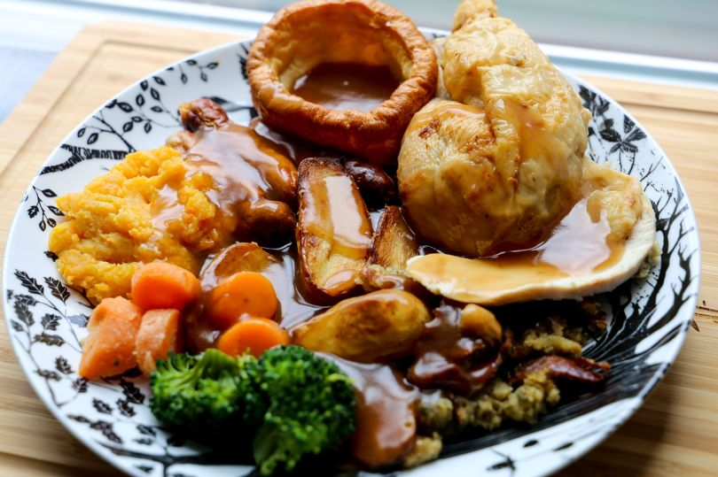

Home

The Sunday Roast Dinner is a fantastic family dish to end the week healthy and full.
It typically consists of roasted meats like beef, lamb, pork or chicken, roast potatoes or mashed,
vegetables like carrots or broccoli and yorkshire pudding and gravy with stuffing.
This is another english classic that has many varieties abroad including the thanks giving dinner with Turkey and cranberry sauce with yams in the US
and has more lavish version for holidays like Christmas in many western countries.
It is a staple and balanced meal with all the food groups to keep you going. It is typically a treat to enjoy on a Sunday or on Christmas witha all the trimmings.
Often enjoyed at the family table with a glass of wine and good times.
- The Meat (Chicken, Beef, Pork, Turkey, Lamb, Venison...)
- Potatoes
- Stuffing Mix
- Vegetables (Carrots, Broccoli, Cauliflour, Cabbage, Peas, Swede, Parsnips...)
- Meat stock (Beef/Chicken)
- Salt and Pepper
- Gravy Stock
- Butter
- Cream
- Water
- Flour
- Milk
- Eggs
- Preheat oven to 200 Degrees Celsius
- Heat pan of cooking oil
- Prepare the meat (stuff checken or season joint)
- Put meat in prheated oven
- Boil potatoes, add dalt and pepper
- Drain and keep water.
- Add potatoes to tray with oive oil and herbs like rosemary or thyme to roast in oven
- Mix stuffing with water and make into balls and put in the oven to crisp with the potatoes
- Use potato water in pan to cook vegetables
- Fry onion in frying pan with oil and add salt and pepper
- Add stock and water to make gravy
- Remove meat when cooked and pour juices into gravy
- Mix flour, eggs and milk to make pudding batter
- Preheat pudding tray with oil and add batter and cook til risen and cooked through
- Serve everything up on a plate and top with gravy
- Serve to your family or guests and watch everyone enjoy the feast, me merry everyone!